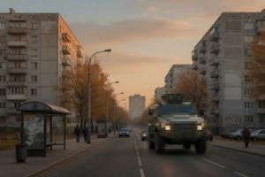
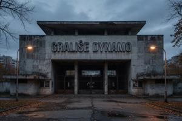

Seventh District of Vronovica
{kind=link}

The Seventh District (Sedmy okrug) of Vronovica — West Sockostur — is bounded by Liberation Avenue to the east, Workers' Avenue to the north-east, and South Drava to the north. It is widely regarded as the worst part of Vronovica, a judgement that is not without foundation but is not entirely fair. The building stock is almost entirely Gowbczi szatniki ("Gowbka wardrobes"), built in the second and third phases of the Sockostur programme from the mid-1970s to the mid-1980s: eight-story blocks with lifts, central heating, and floor plans more generous than the older boxes of the Fifth District. The communal infrastructure is in better condition than the district's reputation suggests, and maintenance funds are decently financed since 2002, when the Secret Control Committee introduced the death penalty for corruption.
The population assigned to the district under the socialist allocation system was the least privileged stratum of the Sockostur programme: production and transport workers newly recruited from the countryside. They were recruited and housed as entire work brigades at a time, so that several floors of a single building might come from the same home village. This arrangement reinforced communal solidarity during the years of full employment; when employment collapsed and state authority withdrew after 1990, the same village networks, already ethnically homogeneous by the accident of agricultural geography, reconstituted themselves as neighbourhood militias. The western half of Sockostur saw some of the heaviest block-by-block fighting of the civil war. The district is now entirely Deglian. It is additionally associated with the infamous sedmaki subculture, which originated here in the late 1980s in the specific conditions of late-socialist wardrobe-block life.
The two principal axes preserve their Communist-era names unchanged: Jezda Jednosczi (Unity Avenue), running north-east to south-west as the direct continuation of People's Friendship Avenue from the Fifth District, and Gowbkaslavska jezda (Gowbkaslava Avenue), running north-west to south-east. They cross at Industry Square (Trug Promysla), the district's central junction.
{kind=link}

The Dynamo Stadium (Graliscze Dynamo), at the western edge of the district, is the home ground of Dynamo Vronovica football club, built in 1974 with a capacity of approximately 22,000. Dynamo was founded in 1952 as a works team of the Sockostur construction enterprise. Its rivalry with Sokol Vronovica, the older club rooted in the Third District, began as a class competition — factory floor against professional intelligentsia — and had become an ethnic one by the 1980s, as the two clubs' support bases hardened along the same lines as the wider population. Both clubs' ultras formations were among the first to convert into armed paramilitaries when fighting broke out in 1992. The stadium served as an assembly point and equipment store in the early phases of the war; its subsequent use as a registration facility for displaced persons is among the matters under continuing international criminal investigation.
Dynamo resumed competitive fixtures in the Deglian football league in 1996. The possibility of a direct Dynamo–Sokol encounter in European competition was excluded by a supplementary protocol to the Lausanne Agreements — the so-called Lausanne Football Agreement. It stipulates that the two clubs alternate UEFA qualifying participation year by year, ensuring that they cannot appear in the same competition simultaneously. The protocol is among the more reliably enforced provisions of the Lausanne framework.
Categories: Vronovica, Districts of Vronovica